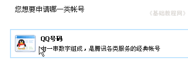
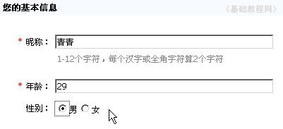
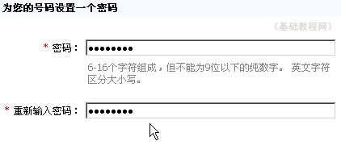
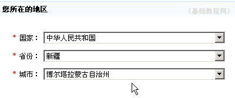
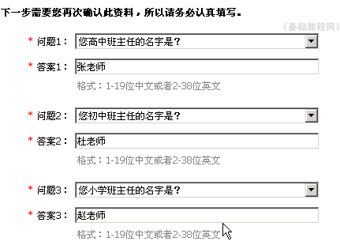
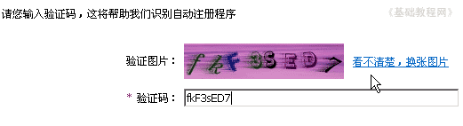
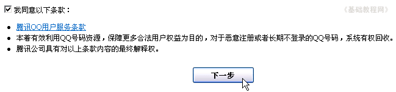
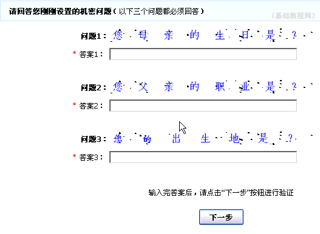

QQ聊天操作基础
一、申请QQ号 返回目录
QQ是一款即时通讯软件，使用它可以很方便的进行文字、语音、视频聊天，使用它必须要有一个QQ号码，并且安装QQ软件，下面我们来看一个练习；
1、进入申请的网页
1）进入腾讯首页，找到“腾讯软件”按钮，点击进入网页，http://im.qq.com/
2）在腾讯软件页面的右边有一个“申请QQ帐号”按钮，点击进入下一步申请页面；
3）选择左边的普通QQ帐号，点击第一个“网页免费申请”，点击进入下一步；
4）在帐号类型里，选择第一个QQ号码申请，点击进入下一步；

2、填写各项资料
1）按照从上到下的顺序填写，前面有红*的必须填写，依次是昵称、年龄、性别，昵称起一个自己喜欢的中英文都可以，
昵称这儿填写“青青”，年龄根据自己性格来定，也可以写真实的，选择好性别；

2）接下来输入密码，密码用数字和字母注意大小写，可以用替换法，比如0＝O、4＝s、7＝q等等替换一下，不容易被猜出，
密码输两遍一样的，输入的时候显示的是*号或者圆点，六位以上；

3）接下来输入地区资料，点击各个下拉按钮，选择自己所在的地区；

4）接下来是密码保护问题，找个本子和纸笔，把问题记下来，后面要用到，
依次选择一个问题，输入相应的答案，把问题和答案都记到本子上，把前面的密码也记上；

5）下面的更多选填资料可以先不填，以后在申请保护的时候填写，
在下面找到验证码，把图片上的字母数字正确填写到下面的文本框里，如果看不清楚，可以点旁边的“换一张图片”链接；

6）检查一下没有错误，就可以点下面的“下一步”按钮，如果出来错误，就看一下哪儿的红色提示；

如果出来提示申请的人太多，可以关掉等一会儿再重新开始，验证码那儿要快一些；
7）下一步出来三个问题，把刚才的几个答案对应填入，点下一步继续；

8）等一会儿出来申请成功的页面，上面红色的是你的QQ号，把这个QQ号也记在本子上后面登录的时候会用到；
本节学习了申请QQ号的基本方法，如果你成功地完成了练习，请继续学习下一课内容；
本教程由86团学校TeliuTe制作|著作权所有
基础教程网：http://teliute.org/
美丽的校园……
转载和引用本站内容，请保留版权信息和本站链接。